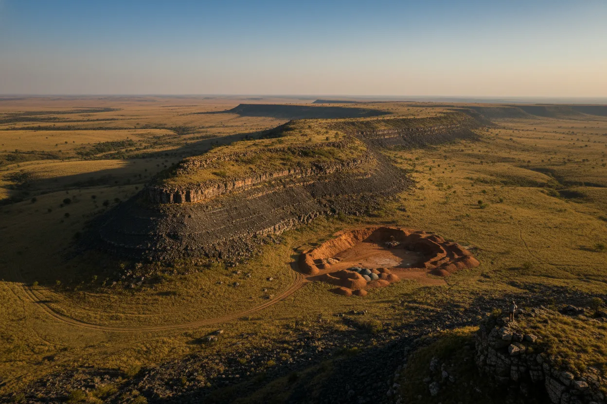
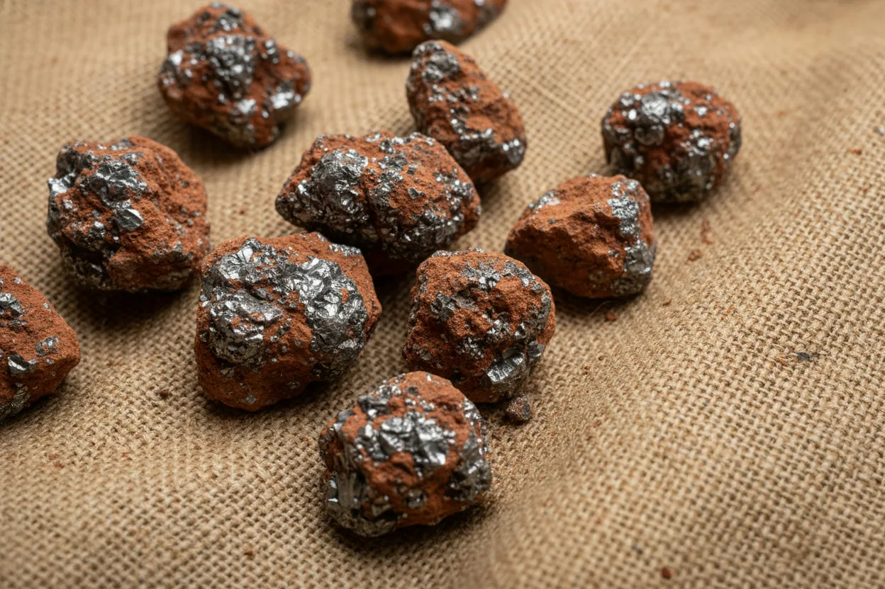

Zimbabwe is one of the world's largest chrome producers. AYCAS ships lumpy ore, friable ore and concentrates from licensed Great Dyke mines via regional ports to tier-one international stainless-steel and ferrochrome counterparties.
The Great Dyke — a 550 km ultramafic intrusion running north-south through Zimbabwe — carries one of the world's largest chromite reserves. AYCAS sources from licensed Zimbabwean mines along the Dyke, coordinating loading, trucking and rail to port for bulk and containerised shipment to stainless-steel producers, ferrochrome plants and chrome-chemical users internationally.

Run-of-mine and screened lumpy chromite, typically in the 10–150 mm size range, for direct smelting at ferrochrome plants. Cr₂O₃ grades vary by deposit; we contract with full chemistry and size distribution per lot.

Friable chromite — naturally occurring fine material that doesn't require further crushing — typically supplied to beneficiation operators who pelletise or sinter for smelter feed, or direct to sintering plants.
Beneficiated chrome concentrate — gravity and spiral-processed — supplied to stainless-steel producers and chrome-chemical processors. Higher Cr₂O₃ grades with tighter chemistry specs than ROM material.
Chrome exports carry the full Zimbabwean mineral-export documentary set and travel through established Southern African port corridors.
Tell us size, grade, volume and destination — we'll come back with producer options, Cr:Fe ratio ranges and an indicative quotation within five working days.
Request a trade brief